# 라운드 8 — 2026-10-23 02:44 평균 점수(C, 1~5, Claude 채점): **3.08** · 자동 점수 3.11 · 그림 면적 평균 41% · 비용 $1.337 · 얼굴 잘림 6 | 유형 | 평균 | A 나음 | C 나음 | 같음 | |---|---|---|---|---| | 사진 | 3.08 | 0 | 5 | 0 | | 누끼 | 3.02 | 2 | 3 | 0 | | 오브젝트·일러스트 | 3.15 | 1 | 4 | 0 | AI 상자 결과: shrink 43 · free 28 · grow 16 · rule 26 · ok 7 ## 문제 집계 - bg:flat 37 - kvWeight:too_small 33 - crop:subject_cut 30 - text:low_contrast 25 - crop:awkward 20 - kvWeight:too_big 11 - text:overlap 6 - crop:face_cut 3 - bg:seam 2 - bg:busy 1 - text:clipped 1 ## 케이스별 큰 문제 - **t1014-hanssem**(사진) · C 나음: 가로형 규격에서 그라데이션 마스크가 이미지 왼쪽을 덮어 정장 여성이 손만 남는 경우가 많음(마스크 시작점이 사진 쪽으로 너무 들어와 있음) / 970×250에서 배율을 과하게 키워 TV와 손 조각만 남는 어색한 크롭이 됨(세로 높이에 맞춘 스케일 로직 추정) / 세로형(1080×1080·300×600·300×1050)은 상단 단색 여백이 넓고 보조 텍스트가 너무 작음(텍스트 스케일 최소값 부재 추정) - **hr-doctor**(사진) · C 나음: 정사각·중간형(1080×1080, 580×400)에서 주인공인 손이 하단 구석에 작게 배치돼 지면이 비어 보인다. 얼굴이 없는 사진인데 '머리 보존' 캐릭터 규칙으로 상체 기준 배치를 해서 손을 주인공으로 인식하지 못한 것으로 추정된다. / 1080×1080 하단에 원본 사진의 주황빛 배경이 노출돼 블루 워시와 경계(seam)가 생긴다. 가장자리 그라데이션의 확장 범위가 세로 방향 여백을 다 덮지 못한 탓으로 보인다. / 300×1050 등 극세로·소형 규격에서 본문 텍스트가 과도하게 축소돼 판독이 불가하다. 최소 글자 크기 하한 규칙이 없는 것으로 추정된다. - **midas-team-photo**(사진) · C 나음: 정사각형과 세로형 규격(1080×1080, 580×400, 300×1050)에서 사진을 하단 띠로 배치하고 위쪽을 페이드시키는 규칙 때문에 키비주얼이 작아지고 인물 얼굴·상체가 잘린다. 원본 비율과 가까운 규격에서도 축소 규칙이 그대로 적용된 것으로 보인다. / 970×250에서 로고 위치를 고정 코너 규칙으로 정해, 흰 로고가 사진의 밝은 벽 위에 올라가 대비가 사라졌다. 로고 배치 시 배경 밝기를 판단하지 않은 것으로 보인다. / 300×1050 등 극단 비율에서 텍스트 스케일이 너무 작고 중간 빈 면이 생긴다. 지면 크기에 맞춘 텍스트 확대 규칙이 부족한 것으로 보인다. 그래도 A의 주황 배경 충돌과 1250×560 사각 패치 이음새보다는 C가 확실히 낫다. - **t1014-asan-photo**(사진) · C 나음: 1080×1080·970×250은 사진을 원본 비율로 작게 놓고 나머지를 단색으로 채워 지면이 비어 보임. 원인: 전면 배경 사진을 정사각과 초가로 비율에서 채움(cover) 대신 맞춤(contain)과 단색 확장으로 처리함. / 300×1050은 가로 300px 폭에 가로형 타이틀 줄바꿈을 그대로 축소해 글자가 판독 불가함. 원인: 세로형 규격 전용 텍스트 레이아웃과 최소 폰트 크기 규칙이 없음. / 1200×600은 크롭이 도시 야경 중앙으로 잡혀 브랜드 상징인 병원 건물이 빠짐. 원인: 주인공 없는 현장 사진으로 분류되어 랜드마크 건물을 보호 영역으로 인식하지 못함. - **midas-cablebridge**(사진) · C 나음: 1250×560에서 헤드라인과 모집 정보가 왼쪽 주탑 케이블 위에 겹친다. 주인공 41%로 큰 사진을 그대로 깔면서 텍스트 안전영역과 피사체의 충돌을 검사하지 않은 것으로 보인다. / 밝은 하늘·바다 원본 위에 흰 글자를 올리면서 오버레이가 약해 1080×1080·580×400·320×100에서 대비가 부족하다. A의 진한 단색 대신 사진 노출을 늘리면서 대비를 보정하지 않은 것으로 추정된다. / 300×600·300×1050 세로 규격에서는 가로형 교량이 조각나고 글자가 지나치게 작다. 가로형 원본을 세로로 크롭할 때 주탑 단위의 크롭 규칙과 최소 글자 크기 규칙이 없는 것으로 보인다. - **t1014-dongsuh**(누끼) · C 나음: 1080×1080에서 인물이 지면 대비 너무 작아 노란 단색 면이 비어 보임. 정사각형에서 카피 블록을 상단에 크게 잡고 남은 높이에만 인물을 맞춰 넣는 규칙 때문으로 추정됨. / 300×1050에서 긴 본문(모집 직무)을 그대로 축소해 넣어 글자가 판독 불가 수준이고, 인물 주변에 원본 회백색 배경과 노란 배경의 경계가 남음. 규격별 텍스트 생략 규칙이 없고 누끼 가장자리 처리가 미흡한 것이 원인으로 추정됨. / 주황·빨강 로고가 노란 배경 위에서 대비가 약하고 크기도 작아 브랜드 식별력이 떨어짐. 로고 색과 크기를 배경색에 맞춰 조정하지 않은 것이 원인으로 추정됨. - **t1014-jeil**(누끼) · C 나음: 세로·정사각형·작은 규격(580×400, 300×1050, 320×100)에서 크롭 위치를 잘못 잡아 JEIL 글자가 조각만 보임. 그림 기준점(앵커)을 피사체 중심이 아닌 가장자리로 잡은 것으로 추정됨. / 키비주얼을 키우면서 하단 인물·실험대가 지면 밖으로 잘리는 경우가 반복됨. 스케일을 올릴 때 안전 여백(피사체 바운딩박스)을 확인하지 않은 듯함. / 970×250에서 그림이 헤드라인에 바짝 붙음. 텍스트 영역과 그림 사이 최소 간격 규칙이 없거나 약한 것으로 보임. - **t1014-bionote-dog**(누끼) · C 나음: 1250×560·300×600에서 강아지가 헤드라인과 날짜를 덮음: 머리 보존을 위해 키비주얼을 키우는 과정에서 텍스트 안전영역을 충돌 제약으로 반영하지 않은 것으로 추정 / 580×400·1080×1080·300×1050에서 강아지가 너무 작아 지면이 비어 보임: 세로형 전신 누끼를 높이 기준으로 맞추느라 폭이 좁아진 것으로 추정되며, 상반신 크롭 같은 대안 배치를 쓰지 않음 / A의 갈색 배경은 골든리트리버 털색과 겹쳐 주인공이 묻힘. C의 파란 배경은 대비가 좋지만, 원본 누끼 가장자리의 흰 프린지가 진한 배경에서 드러날 위험이 있음 - **abl-group**(누끼) · A 나음: 1200×600과 580×400에서 키비주얼을 키우면서 텍스트 안전영역 없이 왼쪽까지 확장해 노란 벌이 날짜와 겹칩니다(AI 배치가 텍스트 박스 충돌을 검사하지 않은 것으로 추정). / 세로형 300×600·300×1050에서 캐릭터 떼를 한 덩어리로 맞추지 않고 오른쪽 일부(곰·병아리)만 확대 크롭해 주인공 벌이 사라졌습니다(그룹 전체 바운딩 대신 개별 덩어리 기준으로 크롭한 탓으로 추정). / 1080×1080은 키비주얼이 하단 띠로 작아져 지면 중앙이 비고, 300×1050은 글자가 판독 불가 수준으로 작습니다(정사각·초세로형용 스케일 규칙 부재). - **midas-folder-blue**(누끼) · A 나음: C 배경이 키비주얼의 흰 타일과 파란 폴더 색을 섞은 연보라·회청색으로 잡혔다. 그 결과 흰 텍스트와 흰 타일의 대비가 떨어진다(AI 판단이 배경색을 타일 반사광 쪽 색으로 샘플링한 것으로 추정). A의 진한 블루가 가독성과 존재감 모두 더 낫다. / 거의 모든 규격에서 타일이 지면 가장자리에 걸려 잘린다(규칙이 KV를 모서리 bleed로 고정한 것으로 추정). 특히 970×250은 KV를 과하게 확대해 타일이 위아래로 잘리고, 로고가 흰 타일 위에 겹친다. / 300×1050은 KV가 너무 작고 텍스트도 매우 작아 중간이 비어 보인다(세로 극단 비율에서 KV 스케일이 가로 폭 기준으로만 계산된 것으로 추정). - **t1014-gs2025**(오브젝트·일러스트) · A 나음: 1200×600에서 C가 확성기 반쪽과 인물 조각을 우측 끝에 걸쳐, A의 여성+폰 크롭보다 어색해졌습니다. 주인공 묶음이 아닌 원본 좌표 기준으로 오른쪽 정렬 크롭을 한 것으로 보입니다. / 1250×560에서는 페이드 마스크가 인물 위까지 덮어 여성이 반투명하게 보입니다. 배경 블렌딩 범위를 주인공 바운딩박스와 구분하지 않은 것이 원인으로 보입니다. / 300×1050과 1250×560 같은 극단 비율에서 그림이 작게 하단에 몰리고 글자가 축소돼 지면이 비고 읽히지 않습니다. 규격별 텍스트 최소 크기와 그림 확대 규칙이 없는 탓으로 보입니다. - **t1014-lt-v2**(오브젝트·일러스트) · C 나음: 극단 비율(970×250·580×400·300×600·320×100)에서 칩이 잘림: 프레임을 채우려고 배율을 높이면서 칩 전체가 들어오는지 확인하는 제약이 빠진 것으로 보임 / 300×1050 본문 가독성 실패: 텍스트를 비율대로 축소하면서 최소 글자 크기 하한이 없고, 텍스트 영역에 회로 패턴이 그대로 남음 / 970×250 과확대로 화질 열화: 원본 해상도를 넘어 확대해 칩이 뭉개지고 하단이 잘림(배율 상한 미설정 추정) - **midas-faces-3d**(오브젝트·일러스트) · C 나음: 970×250·1250×560에서 키비주얼을 하단 기준으로 확대해 캐릭터 얼굴과 폰이 잘림. 크롭 앵커가 얼굴이 아니라 이미지 하단에 고정된 것으로 추정됨 / 300×600·300×1050·580×400은 A와 동일하게 키비주얼이 작게 남아 지면이 비어 보임. AI 판단이 세로형·소형 규격에 적용되지 않은 것으로 추정됨 / 세로형 규격에서 카피 크기가 지면 비율에 맞춰 커지지 않아 가독성이 떨어짐. 텍스트 스케일 규칙이 짧은 변 기준으로만 계산된 것으로 보임 - **pin-15**(오브젝트·일러스트) · C 나음: 970×250·1080×1080·320×100에서 KV 상단(차량신호등 갓)만 노출되고 핵심 요소인 녹색 보행신호가 빠짐. 세로형 KV의 앵커가 위쪽 고정이라 보행신호 기준 크롭이 적용되지 않은 것으로 추정 / 1080×1080·970×250·300×1050에서 KV 비중이 작아 파란 단색 면이 크게 비어 보임. 스케일 기준이 프레임의 짧은 변에 묶여 정사각/세로 규격에서 과소 확대된 것으로 추정 / 580×400 등 중간 규격에서 KV가 우측 끝에 붙어 피사체가 잘리고 타이틀과 간격이 부족함. 텍스트 영역과 KV 안전영역 간 충돌 회피 규칙이 부족한 것으로 추정 - **t1014-asan-illust**(오브젝트·일러스트) · C 나음: 가로형 일러스트인데 규격별 크롭이 인물 단위로 잡히지 않아 1200×600·320×100에서 얼굴이 프레임 끝에 반쪽만 걸림(원인 추정: 주인공 bbox 대신 그림 가장자리 기준으로 배치) / 대부분 규격에서 키비주얼 스케일이 작아 하단에 깔리고 파란 단색 지면이 비어 보임(원인 추정: 텍스트 영역 회피 마진을 과하게 잡아 그림을 축소) / 300×1050 세로 초장형에서 텍스트 스케일 계산이 실패해 글자가 판독 불가로 작고 가장자리에 닿음
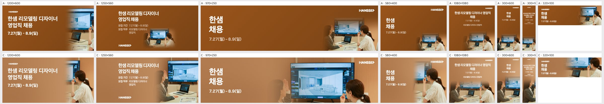
| 규격 | 점수 | 비중 | 크롭 | 배경 | 글자 | 메모 | AI 상자 | 그림 면적·주인공·채움·겹침 |
|---|---|---|---|---|---|---|---|---|
| 1200×600 | 3 | ok | subject_cut | ok | ok | 정장 여성이 그라데이션에 묻혀 흰 셔츠 여성과 TV 조각만 남았으니 크롭을 왼쪽으로 넓혀 두 인물과 화면이 함께 보이게 하라. | shrink | 33% · 31% · 44% · 0% |
| 1250×560 | 3 | ok | subject_cut | ok | ok | 오른쪽 여성의 머리가 우측 끝에서 잘리고 왼쪽 여성은 손만 남았으니 키비주얼을 약간 축소하고 왼쪽으로 옮겨 두 얼굴을 확보하라. | shrink | 45% · 43% · 54% · 23.9% |
| 970×250 | 2 | too_big | awkward | ok | ok | TV와 들어 올린 손, 뒤통수만 크게 확대돼 인물이 읽히지 않으니 배율을 낮춰 두 인물의 상반신이 들어오게 하라. | shrink | 64% · 58% · 65% · 0% |
| 580×400 | 3 | ok | subject_cut | ok | ok | 왼쪽 여성은 흐린 손만 남았으니 크롭을 넓히고, 로고 뒤 TV 가장자리를 피하도록 로고 아래 배경을 정리하라. | free | 52% · 40% · 46% · 0% |
| 1080×1080 | 3 | ok | ok | flat | low_contrast | 상단 절반이 단색으로 비어 보이고 직무 문구가 너무 작으니 이미지를 위로 키우고 보조 텍스트를 최소 1.5배 키워라. | free | 51% · 48% · 61% · 0% |
| 300×600 | 3 | too_small | ok | flat | ok | 하단 사진 속 인물이 너무 작고 중간이 비어 보이니 사진을 세로로 키우거나 한 인물 중심으로 다시 크롭하라. | free | 63% · 24% · 30% · 0% |
| 300×1050 | 2 | too_small | ok | flat | low_contrast | 본문 글자가 판독 불가 수준으로 작으니 문구를 줄이고 크기를 키운 뒤 사진을 세로 중간까지 확대하라. | free | 55% · 54% · 69% · 0% |
| 320×100 | 3 | ok | subject_cut | ok | ok | 흰 셔츠 여성과 TV만 보이니 흰 셔츠 여성의 얼굴과 노트북 중심으로 타이트하게 잡아 주제를 분명히 하라. | free | 62% · 63% · 72% · 0% |
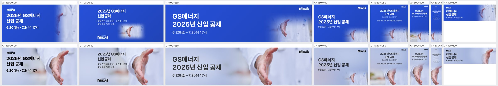
| 규격 | 점수 | 비중 | 크롭 | 배경 | 글자 | 메모 | AI 상자 | 그림 면적·주인공·채움·겹침 |
|---|---|---|---|---|---|---|---|---|
| 1200×600 | 4 | ok | ok | ok | ok | 손이 오른쪽에 크게 잘 들어왔지만 손바닥 아래가 하단에 살짝 잘리니 이미지를 5~8% 위로 올려 손목까지 보이게 한다. | grow | 79% · 34% · 50% · 0% |
| 1250×560 | 4 | ok | ok | ok | ok | 손 배치와 여백 균형은 좋다. 모집 기간 줄의 오른쪽 끝이 손가락과 가까우니 텍스트 블록을 왼쪽으로 20px 정도 당긴다. | grow | 79% · 37% · 48% · 0% |
| 970×250 | 3 | ok | awkward | ok | ok | 높이가 낮아 손가락 끝과 손바닥이 위아래로 잘려 조각처럼 보인다. 이미지를 축소해 손 전체가 세로에 들어오게 하고, 손을 오른쪽 1/4 지점에 둔다. | shrink | 66% · 25% · 40% · 0% |
| 580×400 | 3 | too_small | awkward | flat | ok | 손이 오른쪽 아래 구석에 작게 걸려 지면 대부분이 뿌연 배경뿐이다. 이미지를 1.5배 키워 손을 오른쪽 중앙으로 올린다. | rule | 5% · 16% · 32% · 0% |
| 1080×1080 | 2 | too_small | awkward | seam | ok | 손이 하단 중앙에 작게 박혀 있고, 아래쪽에 원본 사진의 주황빛 배경이 그대로 드러나 블루 워시와 경계가 생긴다. 손을 화면 하단 1/2 크기로 키우고 그라데이션을 하단 끝까지 이어 원본 색을 덮는다. | shrink | 48% · 20% · 40% · 0% |
| 300×600 | 3 | ok | subject_cut | ok | ok | 손이 하단 경계에 걸려 손바닥이 잘린다. 이미지를 약간 축소하고 위로 올려 손 전체가 하단 40% 영역 안에 들어오게 한다. | shrink | 62% · 47% · 60% · 0% |
| 300×1050 | 3 | ok | subject_cut | ok | low_contrast | 모집 직무와 기간 글자가 너무 작아 사실상 안 읽힌다. 텍스트를 최소 14px 이상으로 키우고, 손은 하단에서 잘리지 않게 위로 올린다. | grow | 60% · 48% · 63% · 0% |
| 320×100 | 3 | ok | awkward | ok | ok | 손이 오른쪽 끝에 손가락 일부만 걸려 무엇인지 알아보기 어렵다. 손바닥 중심이 보이도록 이미지를 왼쪽으로 15% 옮기거나 손 부분만 타이트하게 크롭한다. | shrink | 30% · 24% · 40% · 0% |
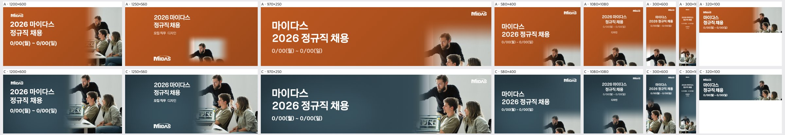
| 규격 | 점수 | 비중 | 크롭 | 배경 | 글자 | 메모 | AI 상자 | 그림 면적·주인공·채움·겹침 |
|---|---|---|---|---|---|---|---|---|
| 1200×600 | 4 | ok | ok | ok | ok | 세 인물이 모두 들어오고 페이드도 자연스럽다. 오른쪽 여성이 프레임 끝에서 잘리므로 사진을 10% 정도 왼쪽으로 옮겨 어깨까지 살린다. | ok | 50% · 18% · 34% · 0% |
| 1250×560 | 4 | ok | ok | ok | ok | 서 있는 남성의 머리가 상단에 너무 붙어 있다. 사진을 5~8% 내려 머리 위 여백을 주고, 왼쪽 텍스트 블록을 조금 키워 빈 면을 줄인다. | shrink | 50% · 21% · 30% · 0% |
| 970×250 | 3 | ok | ok | ok | low_contrast | 우상단 흰 MIDAS 로고가 사진의 밝은 벽 위에 얹혀 거의 안 읽힌다. 로고를 텍스트 쪽 남색 영역으로 옮기거나 로고 뒤에 어두운 그라데이션을 깐다. | shrink | 35% · 18% · 32% · 0% |
| 580×400 | 2 | too_small | awkward | ok | ok | 사진이 우하단 구석으로 밀려 두 남성의 머리 윗부분만 조각으로 보인다. 사진을 오른쪽 절반 높이 전체로 키워 세 인물의 얼굴과 상체가 다 보이게 크롭한다. | rule | 4% · 21% · 36% · 0% |
| 1080×1080 | 2 | too_small | subject_cut | flat | ok | 키비주얼과 같은 정사각형 비율인데도 사진이 하단 띠로 줄고 인물이 턱 아래에서 잘린다. 사진을 지면 하단 60% 이상으로 키워 세 인물을 상반신까지 보여 주고, 텍스트는 상단 남색 영역에 모은다. | rule | 7% · 34% · 45% · 0% |
| 300×600 | 3 | ok | ok | ok | ok | 인물은 들어오지만 텍스트와 날짜가 너무 작다. 타이틀을 1.3배 이상 키우고 사진 상단 페이드를 조금 올려 경계를 더 부드럽게 한다. | shrink | 62% · 40% · 53% · 0% |
| 300×1050 | 2 | too_small | ok | flat | ok | 텍스트가 판독이 어려울 만큼 작고, 텍스트와 사진 사이 중간이 빈 남색 면으로 남는다. 타이틀을 크게 키워 상단 1/3을 채우고 사진을 하단 절반 이상으로 키운다. | rule | 15% · 35% · 44% · 0% |
| 320×100 | 4 | ok | ok | ok | ok | 구성은 적절하다. 로고가 너무 작으니 로고를 빼거나 키우고, 날짜를 한 단계 굵게 해 가독성을 확보한다. | rule | 19% · 40% · 56% · 0% |
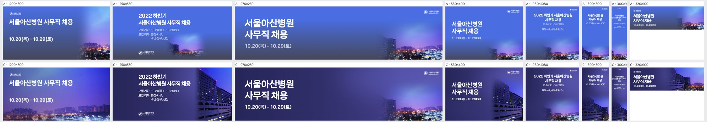
| 규격 | 점수 | 비중 | 크롭 | 배경 | 글자 | 메모 | AI 상자 | 그림 면적·주인공·채움·겹침 |
|---|---|---|---|---|---|---|---|---|
| 1200×600 | 4 | ok | awkward | ok | ok | 병원 건물이 잘려 일반 도시 야경만 남았으니, 크롭 기준점을 왼쪽으로 옮겨 오른쪽 하단에 병원 건물 일부가 들어오게 한다. | grow | 100% · 2% · 16% · 0% |
| 1250×560 | 4 | ok | ok | ok | ok | 사진 위쪽 하늘과 왼쪽 단색 네이비가 만나는 부분의 그라데이션을 더 길게 풀어 경계감을 줄인다. | shrink | 32% · 31% · 43% · 0% |
| 970×250 | 3 | too_small | ok | flat | ok | 사진이 오른쪽 1/3에만 있어 가운데가 비어 보이니, 사진을 1.3배 키워 왼쪽으로 확장하고 야경 불빛이 타이틀 뒤까지 오게 한다. | rule | 5% · 26% · 40% · 0% |
| 580×400 | 4 | ok | ok | ok | ok | 날짜 아래 여백이 크니 타이틀 블록을 세로 중앙으로 약간 내린다. | free | 36% · 36% · 50% · 0% |
| 1080×1080 | 3 | too_small | ok | flat | ok | 사진이 하단 띠에 작게 깔려 상단 60%가 단색 네이비로 비어 있으니, 사진을 세로 절반 이상 차지하도록 키우고 타이틀과 직무 글자도 1.3배 키운다. | rule | 7% · 32% · 49% · 0% |
| 300×600 | 4 | ok | ok | flat | ok | 타이틀과 사진 사이의 빈 네이비 구간이 기니, 사진을 위로 올려 간격을 줄인다. | shrink | 51% · 50% · 63% · 0% |
| 300×1050 | 2 | ok | ok | flat | low_contrast | 타이틀, 날짜, 직무가 거의 읽히지 않을 만큼 작으니, 타이틀 줄바꿈을 3줄로 바꾸고 폰트를 2배 이상 키우며 직무 정보는 빼거나 별도 블록으로 분리한다. | shrink | 40% · 40% · 54% · 0% |
| 320×100 | 4 | ok | ok | ok | ok | 로고가 너무 작아 식별이 안 되니 로고를 빼거나 타이틀 왼쪽에 한 줄로 키워 배치한다. | free | 56% · 12% · 31% · 0% |
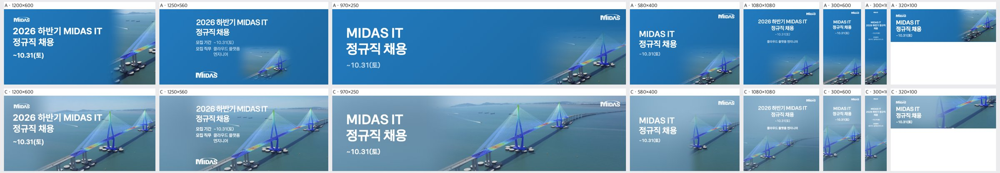
| 규격 | 점수 | 비중 | 크롭 | 배경 | 글자 | 메모 | AI 상자 | 그림 면적·주인공·채움·겹침 |
|---|---|---|---|---|---|---|---|---|
| 1200×600 | 4 | ok | ok | ok | overlap | '2026 하반기 MIDAS IT' 끝부분이 왼쪽 주탑 케이블 시작부에 닿으니 사진을 오른쪽으로 40~60px 밀거나 좌측 그라데이션 폭을 넓혀 글자와 케이블을 떼어라. | shrink | 85% · 46% · 54% · 38.6% |
| 1250×560 | 2 | ok | ok | ok | overlap | 헤드라인·모집기간 블록이 왼쪽 주탑 케이블 위에 그대로 얹혀 있으니 텍스트 블록을 좌측 여백으로 옮기고 사진을 우측으로 이동하며, 하단 로고도 교량 상판에서 빼라. | shrink | 85% · 49% · 57% · 31.2% |
| 970×250 | 4 | ok | ok | ok | ok | 교량 전체가 잘 보이고 글자도 분리되어 있으니, 우측 끝 빈 바다만 조금 덜어내고 교량을 살짝 키워 밀도를 올려라. | shrink | 70% · 43% · 54% · 0% |
| 580×400 | 3 | ok | ok | ok | low_contrast | 밝은 하늘·바다 위의 흰 글자가 약하니 좌측 오버레이 농도를 높이고, 왼쪽 주탑이 헤드라인에 바짝 붙어 있으니 사진을 우측으로 이동하라. | free | 41% · 27% · 39% · 0% |
| 1080×1080 | 3 | ok | ok | ok | low_contrast | 상단 하늘 위의 흰 텍스트 대비가 낮으니 상단 그라데이션을 진하게 깔고, 교량이 하단에 몰려 있으니 사진을 위로 끌어올려 주탑이 화면 중앙 아래에 오게 하라. | shrink | 53% · 21% · 36% · 0% |
| 300×600 | 3 | ok | awkward | ok | low_contrast | 세로 크롭에 주탑 하나와 케이블 조각만 남으니 주탑 한 개를 중심에 온전히 넣도록 크롭하고, 상단 텍스트에는 진한 오버레이를 깔아라. | grow | 72% · 54% · 64% · 0% |
| 300×1050 | 2 | too_small | awkward | ok | low_contrast | 글자가 너무 작아 읽히지 않고 교량은 가는 조각뿐이니 헤드라인을 2배 이상 키우고 하단 절반에 주탑 하나를 크게 크롭해 배치하라. | free | 55% · 46% · 58% · 0% |
| 320×100 | 3 | ok | ok | ok | low_contrast | 작은 흰 글자가 밝은 바다 위에서 약하니 좌측 오버레이를 진하게 하고, 마감일 '~10.31(토)'은 키우거나 빼서 헤드라인 크기를 확보하라. | free | 62% · 63% · 77% · 0% |
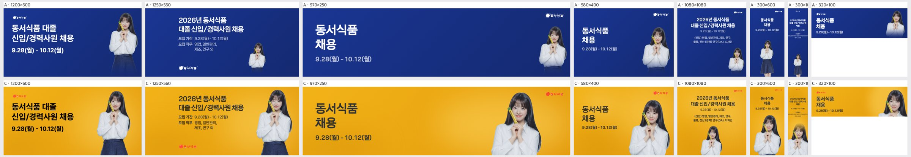
| 규격 | 점수 | 비중 | 크롭 | 배경 | 글자 | 메모 | AI 상자 | 그림 면적·주인공·채움·겹침 |
|---|---|---|---|---|---|---|---|---|
| 1200×600 | 4 | ok | ok | ok | ok | 인물이 오른쪽 끝에 붙어 답답해 보이니 인물을 왼쪽으로 30~40px 옮겨 우측 여백을 확보하고, 좌상단 로고를 한 단계 키워 노란 배경 위에서 식별되게 한다. | ok | 29% · 10% · 24% · 0% |
| 1250×560 | 4 | ok | ok | ok | ok | 머리 윗선이 상단에 바짝 붙어 있으니 인물을 5% 정도 축소하거나 아래로 내려 정수리 여백을 주고, 좌하단 로고는 본문 블록 바로 아래로 올려 시선 흐름을 묶는다. | free | 31% · 11% · 29% · 0% |
| 970×250 | 4 | ok | ok | ok | ok | 카피와 인물 사이 가운데 노란 면이 크게 비어 보이니 인물을 중앙 쪽으로 100px가량 당기고, 우상단 로고와 인물 간격을 맞춰 정리한다. | shrink | 29% · 10% · 19% · 0% |
| 580×400 | 4 | ok | ok | ok | ok | 인물 오른쪽 어깨가 프레임에 닿아 있으니 인물을 살짝 축소해 좌우 여백을 맞추고, 날짜 텍스트 크기를 한 단계 키워 가독성을 높인다. | free | 40% · 19% · 28% · 0% |
| 1080×1080 | 3 | too_small | ok | flat | ok | 인물이 하단 중앙에 작게 깔려 지면 절반 이상이 노란 단색으로 비어 보이니 인물을 1.4배 이상 키워 하단 2/3를 채우고, 카피 블록은 상단에 좌정렬로 모아 시선 대비를 만든다. | free | 45% · 8% · 31% · 0% |
| 300×600 | 4 | ok | ok | ok | ok | 상단 카피와 인물 사이 공백이 커서 위아래가 분리돼 보이니 카피를 키워(제목 24px 이상) 공백을 줄이고 로고 크기도 함께 키운다. | shrink | 53% · 26% · 34% · 0% |
| 300×1050 | 2 | ok | ok | seam | low_contrast | 본문(모집 직무 등) 글자가 너무 작아 사실상 안 읽히니 제목·날짜만 남겨 크게 키우고 직무 목록은 삭제하며, 인물 주변에 보이는 원본 배경 톤의 경계는 노란 배경으로 덮거나 누끼를 다시 따서 없앤다. | ok | 50% · 35% · 52% · 0% |
| 320×100 | 4 | ok | ok | ok | ok | 정수리가 상단에 닿아 있으니 인물을 약간 내리거나 축소해 머리 여백을 확보하고, 카피를 2줄로 유지하되 날짜를 굵게 처리해 작은 지면에서도 읽히게 한다. | rule | 40% · 21% · 34% · 0% |
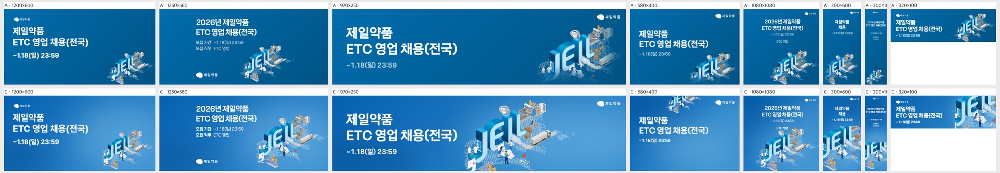
| 규격 | 점수 | 비중 | 크롭 | 배경 | 글자 | 메모 | AI 상자 | 그림 면적·주인공·채움·겹침 |
|---|---|---|---|---|---|---|---|---|
| 1200×600 | 4 | ok | subject_cut | ok | ok | 키비주얼 하단 실험실 인물이 지면 아래로 살짝 잘리니 그림을 위로 40px 올리거나 5% 줄여 하단 여백을 확보할 것. | shrink | 26% · 16% · 32% · 0% |
| 1250×560 | 4 | ok | ok | ok | ok | 하단 인물·실험대가 가장자리에 붙어 있으니 그림을 약간 위로 올려 바닥 여백을 주고, 좌하단 로고와의 균형을 맞출 것. | shrink | 32% · 26% · 41% · 1.7% |
| 970×250 | 3 | too_big | subject_cut | ok | ok | JEIL 글자가 헤드라인 끝(‘(전국)’)에 바짝 붙고 하단 인물이 잘리니 그림을 85% 정도로 줄여 오른쪽으로 밀고 수직 중앙에 맞출 것. | grow | 68% · 31% · 46% · 0% |
| 580×400 | 2 | ok | awkward | ok | ok | 그림이 상단 가장자리에 걸려 JEIL 글자 아랫부분만 조각처럼 보이니 우하단(또는 하단 중앙)으로 옮겨 글자 전체와 인물이 들어오게 다시 배치할 것. | free | 23% · 2% · 18% · 0% |
| 1080×1080 | 3 | ok | subject_cut | ok | ok | 그림이 바닥에 잘려 실험실·인물이 끊기고 ‘ETC 영업’ 문구와 가까우니 그림을 10% 줄여 위로 올리고 텍스트 블록과 간격을 40px 이상 확보할 것. | ok | 49% · 9% · 23% · 0% |
| 300×600 | 3 | too_big | subject_cut | ok | ok | JEIL이 좌우·하단으로 크게 잘려 브랜드 글자가 깨지니 폭에 맞춰 축소해 J~L이 모두 보이게 하고 하단에 여백을 줄 것. | grow | 60% · 25% · 33% · 0% |
| 300×1050 | 2 | too_small | awkward | flat | ok | 하단에 ‘JE’ 조각만 걸려 있고 중간 지면이 비어 보이니 그림을 폭에 맞게 전체로 넣어 세로 중하단에 배치하고, 텍스트 크기도 키워 빈 면을 채울 것. | shrink | 38% · 23% · 34% · 0% |
| 320×100 | 3 | ok | awkward | ok | ok | JEIL 상단이 잘린 채로 보이니 그림을 축소해 JEIL 글자 부분만 온전히 보이도록 세로 중앙에 맞출 것. | free | 39% · 30% · 50% · 0% |
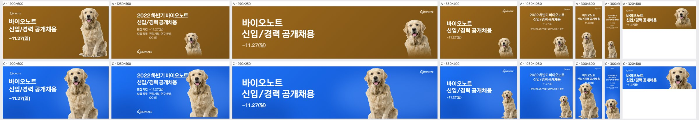
| 규격 | 점수 | 비중 | 크롭 | 배경 | 글자 | 메모 | AI 상자 | 그림 면적·주인공·채움·겹침 |
|---|---|---|---|---|---|---|---|---|
| 1200×600 | 4 | ok | ok | ok | ok | 강아지가 앞발 직전에서 하단으로 잘리니 5~8% 줄이고 위로 올려 앞발까지 보이게 하고, 누끼 가장자리의 흰 털 프린지를 정리할 것. | shrink | 36% · 24% · 39% · 1.1% |
| 1250×560 | 2 | too_big | ok | ok | overlap | 헤드라인 '바이오노트' 끝이 강아지 귀에 닿으니 강아지를 약 20% 줄이고 오른쪽 끝으로 붙여 텍스트 블록과 40px 이상 띄울 것. | shrink | 31% · 21% · 38% · 1.2% |
| 970×250 | 4 | ok | ok | ok | ok | 가슴 높이 크롭은 자연스러우니 강아지를 로고 쪽으로 조금 옮겨 강아지와 로고 사이 빈 공간을 줄일 것. | shrink | 36% · 12% · 27% · 0% |
| 580×400 | 3 | too_small | ok | flat | ok | 강아지가 우하단에 작게 박혀 있어 오른쪽 위가 비니 1.6배 정도 키워 상반신 크롭으로 오른쪽 절반을 채울 것. | shrink | 19% · 9% · 24% · 0% |
| 1080×1080 | 3 | too_small | ok | flat | ok | 하단 절반이 거의 비었으니 강아지를 중앙 하단에 지면 폭 50% 이상 크기로 키워 텍스트 아래 영역을 채울 것. | free | 45% · 7% · 30% · 0% |
| 300×600 | 2 | too_big | ok | ok | overlap | 강아지 머리가 날짜 '~11.27(일)'를 덮으니 강아지를 15~20% 줄여 날짜 아래 여백부터 시작하도록 내릴 것. | grow | 67% · 35% · 47% · 0% |
| 300×1050 | 3 | too_small | ok | flat | ok | 텍스트와 강아지 사이 중간 구간이 비니 강아지를 키워 위로 올리고 본문 폰트를 한 단계 키울 것. | ok | 40% · 10% · 28% · 0% |
| 320×100 | 4 | ok | ok | ok | ok | 얼굴 위주 크롭이 좋으니 강아지 머리 윗부분이 상단에 닿지 않게 4~6px 여백을 확보할 것. | free | 43% · 18% · 37% · 0% |
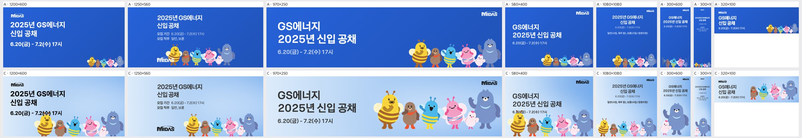
| 규격 | 점수 | 비중 | 크롭 | 배경 | 글자 | 메모 | AI 상자 | 그림 면적·주인공·채움·겹침 |
|---|---|---|---|---|---|---|---|---|
| 1200×600 | 2 | too_big | ok | ok | overlap | 노란 벌 머리가 날짜 '7.2(수)'를 덮고 있습니다. 캐릭터 그룹을 약 15% 줄여 오른쪽 아래로 붙이고, 날짜 줄 아래로 여백을 최소 40px 확보해야 합니다. | grow | 35% · 31% · 45% · 0% |
| 1250×560 | 4 | ok | ok | ok | ok | 캐릭터 발끝이 하단에 살짝 잘립니다. 그룹을 10px 정도 올려 발까지 보이게 하고, MIDAS 로고와 벌 사이 간격을 조금 더 띄워야 합니다. | ok | 26% · 20% · 32% · 0% |
| 970×250 | 4 | ok | ok | ok | ok | 캐릭터 발이 하단에서 잘립니다. 그룹을 5% 줄이거나 위로 올려 발끝까지 노출해야 합니다. | free | 55% · 36% · 51% · 0% |
| 580×400 | 2 | too_big | ok | ok | overlap | 노란 벌 더듬이와 머리가 날짜 '6.20(금)'과 겹칩니다. 캐릭터 그룹을 줄여 오른쪽 아래로 옮기거나, 텍스트 블록을 위로 20px 이상 올려 분리해야 합니다. | grow | 50% · 16% · 31% · 0% |
| 1080×1080 | 2 | too_small | ok | flat | ok | 캐릭터가 하단 띠에만 작게 있어 가운데가 비어 보입니다. 그룹을 1.5배 이상 키워 화면 하단 절반을 채우고, 제목 글자도 키워야 합니다. | shrink | 34% · 10% · 30% · 0% |
| 300×600 | 2 | ok | awkward | ok | ok | 곰과 병아리만 크게 잘려 들어가 나머지 캐릭터가 사라졌습니다. 그룹 전체가 가로폭에 들어오도록 축소해 하단에 배치해야 합니다. | grow | 58% · 43% · 56% · 0% |
| 300×1050 | 2 | too_small | subject_cut | flat | low_contrast | 글자가 너무 작아 읽히지 않고, 캐릭터는 하단에 곰과 병아리 일부만 보입니다. 제목을 2배로 키우고, 캐릭터를 2단으로 재배치하거나 그룹 전체를 폭에 맞춰 중하단에 넣어야 합니다. | grow | 33% · 25% · 41% · 0% |
| 320×100 | 3 | ok | subject_cut | ok | ok | 대표 캐릭터인 노란 벌이 잘려 빠졌습니다. 그룹을 축소해 벌부터 곰까지 다 보이게 하거나, 벌을 포함한 3~4마리만 골라 배치해야 합니다. | grow | 55% · 18% · 34% · 1.4% |
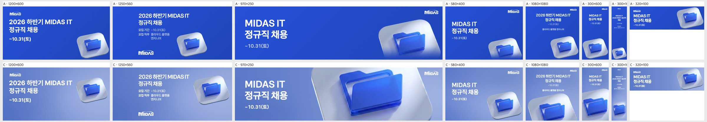
| 규격 | 점수 | 비중 | 크롭 | 배경 | 글자 | 메모 | AI 상자 | 그림 면적·주인공·채움·겹침 |
|---|---|---|---|---|---|---|---|---|
| 1200×600 | 3 | ok | ok | flat | low_contrast | 배경을 #2A50D8 계열 진한 블루로 낮춰 흰 헤드라인 대비를 4.5:1 이상으로 올리고, 오른쪽 끝에 붙은 타일을 안쪽으로 40px 들여 여백을 확보한다. | shrink | 22% · 3% · 15% · 0% |
| 1250×560 | 3 | ok | ok | flat | low_contrast | '모집 기간/직무' 소형 텍스트가 연보라 배경에 묻히므로 배경 명도를 낮추거나 텍스트를 굵게 키우고, 타일이 오른쪽 끝에 잘리지 않게 왼쪽으로 옮긴다. | shrink | 22% · 4% · 15% · 0% |
| 970×250 | 2 | too_big | awkward | flat | low_contrast | 타일이 위아래로 잘린 채 지면 절반을 차지하므로 KV를 높이의 85% 이내로 줄여 타일 전체를 보이게 하고, 흰 타일 위에 놓인 MIDAS 로고는 진한 배경 쪽으로 옮긴다. | free | 68% · 27% · 39% · 0% |
| 580×400 | 3 | ok | subject_cut | flat | low_contrast | 타일이 오른쪽·아래로 잘리므로 KV를 10~15% 키우고 안쪽으로 당겨 폴더와 타일 윤곽이 모두 보이게 하며, 배경 명도를 낮춰 '~10.31(토)' 가독성을 확보한다. | free | 48% · 6% · 17% · 0% |
| 1080×1080 | 3 | ok | subject_cut | flat | low_contrast | 폴더 하단이 아래 경계에 잘리므로 KV를 위로 80px 올리고, '클라우드 플랫폼 엔지니어' 줄은 크기와 굵기를 올려 연한 배경에서도 읽히게 한다. | free | 51% · 16% · 31% · 0% |
| 300×600 | 3 | ok | subject_cut | flat | low_contrast | 타일 우하단이 잘리므로 KV를 가운데 정렬로 옮겨 전체가 보이게 하고, 헤드라인 크기를 키우고 배경을 진하게 바꿔 대비를 높인다. | free | 63% · 32% · 42% · 0% |
| 300×1050 | 2 | too_small | ok | flat | low_contrast | KV가 하단에 작게 놓여 가운데가 비므로 KV를 폭의 80%까지 키워 중단에 배치하고, 상단 텍스트는 최소 14px 이상으로 키워 진한 배경 위에 올린다. | ok | 35% · 17% · 29% · 0% |
| 320×100 | 3 | ok | subject_cut | flat | low_contrast | 타일이 오른쪽 끝에서 잘리므로 KV를 높이에 맞춰 축소하고 안쪽으로 배치하며, 날짜 텍스트를 키우고 배경을 어둡게 해 대비를 확보한다. | rule | 40% · 32% · 47% · 0% |
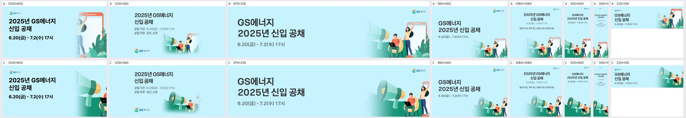
| 규격 | 점수 | 비중 | 크롭 | 배경 | 글자 | 메모 | AI 상자 | 그림 면적·주인공·채움·겹침 |
|---|---|---|---|---|---|---|---|---|
| 1200×600 | 2 | ok | awkward | ok | ok | 오른쪽 끝에 확성기 반쪽과 노트북 인물 일부만 걸려 있습니다. 크롭 기준을 확성기와 두 인물 묶음으로 바꿔 우측 1/3 영역에 온전히 넣으세요. | rule | 14% · 29% · 46% · 0% · 얼굴 잘림 1 |
| 1250×560 | 3 | too_small | awkward | ok | ok | 서 있는 여성이 페이드 그라데이션에 묻혀 유령처럼 보이고, 그림이 중앙 하단에 작게 몰려 우측이 비어 보입니다. 그라데이션 마스크 범위를 줄이고 그림을 120% 정도 키워 우측으로 붙이세요. | rule | 9% · 16% · 28% · 0% · 얼굴 잘림 1 |
| 970×250 | 4 | ok | ok | ok | ok | 확성기, 노트북 인물, 여성 구성이 온전합니다. 여성 머리 위 여백만 조금 더 확보하세요. | rule | 8% · 24% · 39% · 0% · 얼굴 잘림 1 |
| 580×400 | 4 | too_small | ok | ok | ok | 그림이 우하단에 작게 붙어 있어 하단 중앙이 비어 보입니다. 그림을 10~15% 키워 좌측으로 조금 당기세요. | rule | 6% · 19% · 34% · 0% · 얼굴 잘림 1 |
| 1080×1080 | 4 | ok | ok | ok | ok | 구성은 좋습니다. 다만 직무·기간 보조 문구가 지나치게 작으니 한 단계 키워 가독성을 확보하세요. | rule | 10% · 31% · 51% · 0% · 얼굴 잘림 1 |
| 300×600 | 3 | ok | subject_cut | ok | ok | 우측 여성이 잘리고 그림 하단이 꽉 차 답답합니다. 그림을 약간 줄이고 중심을 왼쪽으로 옮겨 세 인물을 모두 넣으세요. | rule | 34% · 38% · 51% · 0% |
| 300×1050 | 2 | too_small | subject_cut | flat | low_contrast | 본문 글자가 판독 불가 수준으로 작고, 중간 하늘 영역이 길게 비어 있습니다. 타이틀과 날짜를 2배 이상 키우고 그림을 세로 중앙 쪽으로 올려 크게 배치하세요. | rule | 28% · 31% · 46% · 0% |
| 320×100 | 3 | ok | subject_cut | ok | ok | 여성이 잘려 확성기와 노트북 인물만 보입니다. 이 크기에서는 확성기 하나만 크게 크롭해 아이콘처럼 쓰는 편이 명확합니다. | rule | 18% · 37% · 53% · 0% · 얼굴 잘림 1 |
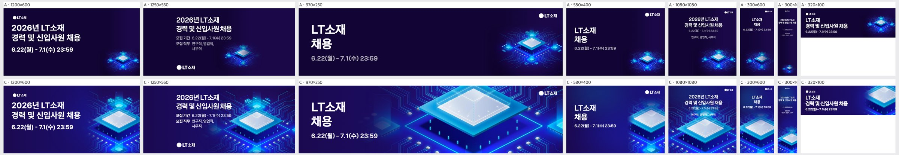
| 규격 | 점수 | 비중 | 크롭 | 배경 | 글자 | 메모 | AI 상자 | 그림 면적·주인공·채움·겹침 |
|---|---|---|---|---|---|---|---|---|
| 1200×600 | 4 | ok | ok | ok | ok | 오른쪽 가장자리에서 칩 측면 기판이 잘리니, 키비주얼을 왼쪽으로 5~8% 옮겨 칩 전체와 오른쪽 여백을 확보할 것 | shrink | 43% · 38% · 58% · 15.1% |
| 1250×560 | 4 | ok | ok | ok | ok | 상단 보조 칩의 발광부가 프레임 위에서 잘리고 '모집 기간' 줄 끝이 회로선에 닿으니, 키비주얼을 아래·오른쪽으로 약간 내려 텍스트 블록과 간격을 둘 것 | shrink | 62% · 46% · 59% · 40% |
| 970×250 | 3 | too_big | awkward | ok | ok | 칩을 과하게 확대해 하단이 잘리고 화질이 뭉개지니, 배율을 60~70%로 낮춰 칩 전체를 띠 높이 안에 넣고 오른쪽(로고 아래)으로 옮길 것 | grow | 78% · 60% · 69% · 0.6% |
| 580×400 | 3 | ok | subject_cut | ok | ok | 칩의 오른쪽 절반과 아래가 프레임 밖으로 나가니, 배율을 약 80%로 줄이고 왼쪽으로 당겨 칩 윗면 전체가 보이게 할 것 | free | 33% · 15% · 23% · 0% |
| 1080×1080 | 4 | ok | ok | ok | low_contrast | '연구직, 영업직, 사무직' 줄이 상단 보조 칩 발광부 위에 얹혀 흐려지니, 키비주얼을 아래로 10% 내리거나 텍스트 뒤에 어두운 그라데이션을 깔 것 | grow | 85% · 24% · 40% · 0% |
| 300×600 | 3 | ok | subject_cut | ok | ok | 칩 폭이 프레임보다 넓어 양옆 모서리가 잘리니, 배율을 줄여 칩 윗면 네 모서리가 모두 들어오게 맞출 것 | shrink | 65% · 31% · 40% · 0% |
| 300×1050 | 2 | ok | subject_cut | busy | low_contrast | 본문 글자가 지나치게 작고 회로선 위에 놓여 읽히지 않으니, 헤드라인을 2배 이상 키우고 상단 1/3은 회로 없는 단색 그라데이션으로 비워 둘 것 | shrink | 45% · 21% · 34% · 0% |
| 320×100 | 3 | ok | subject_cut | ok | ok | 칩 상단과 오른쪽이 잘리고 '경력 및 신입사원 채용' 끝이 칩에 바짝 붙으니, 칩을 축소해 오른쪽 끝에 정렬하고 텍스트와 최소 16px 간격을 둘 것 | shrink | 35% · 27% · 48% · 0% |
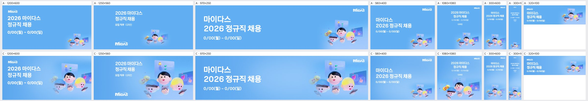
| 규격 | 점수 | 비중 | 크롭 | 배경 | 글자 | 메모 | AI 상자 | 그림 면적·주인공·채움·겹침 |
|---|---|---|---|---|---|---|---|---|
| 1200×600 | 4 | ok | ok | ok | ok | 하단에서 손과 폰이 살짝 잘립니다. 키비주얼을 5~8% 위로 올려 폰 하단까지 보이게 하세요. | shrink | 48% · 20% · 35% · 0% |
| 1250×560 | 3 | too_big | subject_cut | ok | ok | 파란 모자 캐릭터 얼굴 하단과 폰이 바닥선에 걸립니다. 키비주얼을 약 85%로 줄이고 위로 올려 세 얼굴이 온전히 들어오게 하세요. | grow | 61% · 26% · 35% · 0% |
| 970×250 | 3 | too_big | face_cut | ok | ok | 양옆 캐릭터의 턱과 입이 하단에서 잘립니다. 크롭 기준을 얼굴 중심으로 올리거나 스케일을 줄여 세 얼굴 전체가 높이 안에 들어오게 하세요. | shrink | 36% · 16% · 30% · 0% |
| 580×400 | 3 | too_small | ok | flat | ok | 키비주얼이 우하단에 작게 몰려 중앙 하단이 비어 보입니다. 1.4배 정도 키워 오른쪽 하단 절반을 채우세요. | rule | 10% · 8% · 22% · 0% |
| 1080×1080 | 4 | ok | ok | ok | ok | 상단 카피가 지면 대비 작습니다. 타이틀을 1.3배 키우고 키비주얼과의 간격을 조금 줄이세요. | shrink | 54% · 24% · 35% · 0% |
| 300×600 | 3 | too_small | ok | flat | ok | 키비주얼이 하단에 작아 중간이 비어 보입니다. 폭을 지면 가득 채울 만큼 키우고 카피를 한 단계 키우세요. | rule | 0% · 19% · 31% · 0% |
| 300×1050 | 2 | too_small | ok | flat | low_contrast | 카피가 너무 작아 읽히지 않고 키비주얼도 바닥에 점처럼 남습니다. 카피를 2배 이상 키우고 키비주얼을 폭 가득 확대해 하단 1/3을 채우세요. | shrink | 34% · 4% · 13% · 0% |
| 320×100 | 4 | ok | ok | ok | ok | 카피와 키비주얼 사이 간격이 좁습니다. 키비주얼을 오른쪽 끝에 더 붙여 여백을 확보하세요. | rule | 17% · 13% · 29% · 0% |
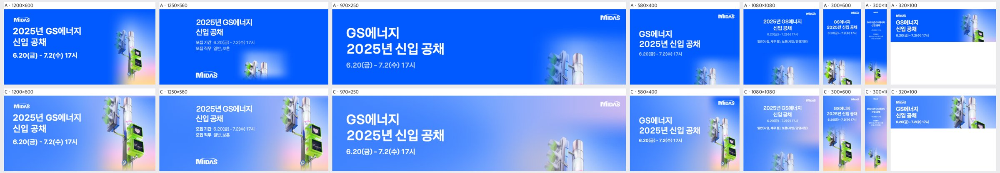
| 규격 | 점수 | 비중 | 크롭 | 배경 | 글자 | 메모 | AI 상자 | 그림 면적·주인공·채움·겹침 |
|---|---|---|---|---|---|---|---|---|
| 1200×600 | 4 | ok | ok | ok | ok | 신호등 상단 갓이 위로 살짝 잘립니다. KV를 5~8% 줄이거나 아래로 내려 위 여백을 확보하고, 보행신호 두 개가 모두 온전히 보이게 맞추세요. | shrink | 42% · 26% · 43% · 0% |
| 1250×560 | 4 | ok | ok | ok | ok | KV가 오른쪽 끝에 붙어 신호등 갓이 프레임에 닿습니다. KV를 왼쪽으로 40px쯤 옮겨 오른쪽 숨통을 주고, 하단 핑크 그라데이션이 좌측까지 자연스럽게 이어지게 하세요. | shrink | 33% · 24% · 36% · 0% |
| 970×250 | 2 | too_small | awkward | flat | ok | 차량신호등 윗부분만 흐릿하게 보이고 핵심인 녹색 보행신호가 빠졌습니다. 보행신호 박스를 중심으로 크롭해 높이에 꽉 차게 키우고, 페이드를 줄여 선명하게 하세요. | rule | 5% · 19% · 34% · 0% |
| 580×400 | 3 | ok | subject_cut | ok | ok | 보행신호가 오른쪽 가장자리에서 잘리고 타이틀 끝과 KV가 맞닿습니다. KV를 15% 줄여 보행신호 전체를 프레임 안에 넣고, 타이틀과 최소 24px 간격을 두세요. | shrink | 32% · 18% · 34% · 1.9% |
| 1080×1080 | 2 | too_small | awkward | flat | ok | 하단에 신호등 꼭대기만 작게 나오고 지면의 절반 이상이 빈 파랑입니다. 세로 KV를 하단 60% 높이로 크게 올리고 보행신호가 보이도록 배치한 뒤, 텍스트 블록은 상단에 압축하세요. | rule | 7% · 23% · 43% · 0% |
| 300×600 | 4 | ok | ok | ok | ok | 보행신호 아래쪽이 하단에서 잘립니다. KV를 10% 줄이거나 위로 올려 하단 보행신호 박스까지 담으세요. | free | 63% · 43% · 56% · 0% |
| 300×1050 | 3 | too_small | ok | flat | low_contrast | 세로 지면인데 KV가 하단에 작게 들어가 중간이 비고, 본문 글자가 너무 작아 읽히지 않습니다. 원본 세로 비율 그대로 KV를 폭에 맞춰 키우고, 모집기간·직무 글자를 최소 14px로 키우세요. | rule | 15% · 35% · 51% · 0% |
| 320×100 | 3 | ok | awkward | ok | ok | 차량신호등 상단만 보이고 보행신호는 가장자리에 걸칩니다. 녹색 보행신호 박스 위주로 크롭을 바꿔 오른쪽 영역에 온전히 넣으세요. | free | 53% · 14% · 30% · 0% |
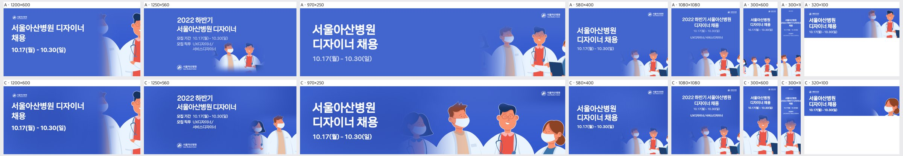
| 규격 | 점수 | 비중 | 크롭 | 배경 | 글자 | 메모 | AI 상자 | 그림 면적·주인공·채움·겹침 |
|---|---|---|---|---|---|---|---|---|
| 1200×600 | 2 | too_small | face_cut | flat | ok | 오른쪽 끝에 안경 의사 얼굴 반쪽과 흐린 인물만 보이니, 키비주얼을 우측 45% 영역으로 키우고 안경 의사와 오른쪽 여의사 두 명이 얼굴 전체로 들어오게 크롭하라. | rule | 14% · 30% · 44% · 0% |
| 1250×560 | 3 | too_small | subject_cut | ok | ok | 인물 두 명이 우하단에 작게 몰려 있고 왼쪽 여의사는 흐려져 있으니, 인물을 1.4배 키워 우측 절반을 채우고 페이드 마스크를 하단에만 두라. | shrink | 20% · 18% · 30% · 0% |
| 970×250 | 4 | ok | ok | ok | ok | 오른쪽 여의사 머리가 프레임 끝에 닿으니 그림을 왼쪽으로 30px 옮겨 여백을 확보하고, 왼쪽 유령처럼 흐린 인물은 페이드를 줄이거나 빼라. | free | 53% · 48% · 63% · 0% |
| 580×400 | 3 | too_small | subject_cut | flat | ok | 인물이 하단에 작게 깔려 지면 위쪽이 비어 보이니, 키비주얼을 1.3배 키워 가슴선까지 보이도록 위로 올려라. | rule | 6% · 20% · 35% · 0% |
| 1080×1080 | 3 | too_small | subject_cut | flat | ok | 정사각형에서 인물이 하단 1/3에 작게 들어가 중앙이 비니, 인물을 키워 하단 절반을 채우고 헤드라인을 조금 더 크게 키워라. | rule | 10% · 33% · 50% · 0% |
| 300×600 | 4 | ok | ok | ok | ok | 양옆 인물이 반쯤 잘려 산만하니, 안경 의사를 중앙에 두고 좌우 인물은 어깨까지만 걸치도록 크롭을 정리하라. | free | 63% · 60% · 74% · 0% |
| 300×1050 | 2 | too_small | subject_cut | flat | clipped | 본문 글자가 판독 불가 수준으로 작고 '2022 하반기' 줄이 좌우 끝에 닿으니, 헤드라인을 2배 키워 줄바꿈을 다시 하고 인물은 하단 40%를 채우게 키워라. | free | 55% · 54% · 68% · 0% |
| 320×100 | 3 | too_small | face_cut | flat | ok | 여의사 얼굴이 오른쪽 끝에서 잘리고 가운데가 비니, 안경 의사와 여의사 두 얼굴을 우측 40% 안에 온전히 넣어라. | shrink | 30% · 0% · 20% · 0% |